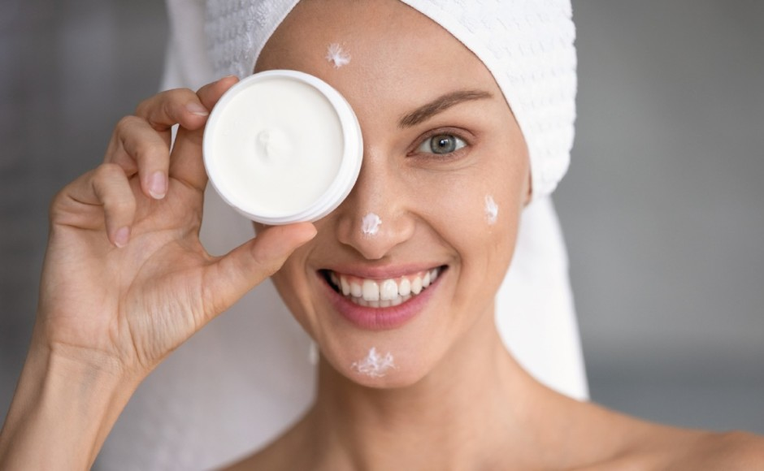

¿Te encanta el maquillaje pero al mismo tiempo te da miedo
que los cosméticos puedan dañar o deshidratar tu piel? No te preocupes, aquí te contamos el paso a paso para cuidar tu piel justo
antes de aplicar cualquier producto cosmético en tu rostro y prevenir que esto suceda.
Al cuidar la piel de tu rostro antes de aplicar maquillaje aseguras que está esté hidratada y libre de impurezas y así
tu maquillaje luzca más estilizado y limpio por mucho más tiempo. Es cierto que si utilizas buenos cosméticos tu piel sufrirá menos,
pero si no la preparas bien, el maquillaje puede convertirse en un enemigo de tu rostro más que en un aliado. Por eso, es importante
que reserves esos 15 para el cuidado de tu rostro.
| Paso 1 Limpiar |
Limpiar el rostro a fondo antes de aplicar cualquier maquillaje |
| Paso 2 Tonico |
Se debe aplicar para sellar los poros e hidratar la piel | Paso 3 Suero |
Usar un suero antes de aplicar la crema hidratante hará que agreguemos más vitaminas y minerales adicionales a nuestra piel |
| Paso 4 Crema o gel hidratante |
Liviana e hidrata la piel profundamente sin hacer que se sienta muy grasosa y así el maquillaje se ajusta mejor |
| Paso 5 Primer |
Antes de aplicar el maquillaje, ya que controlará la grasita de nuestra piel, permitirá que el maquillaje se vea mejor y se mantenga durante más tiempo |
| Paso 6 Extra: Exfolia |
Recuerda que al exfoliar la piel de tu rostro estarás ayudándola a liberarse de impurezas y piel muerta que pueden causar imperfecciones |